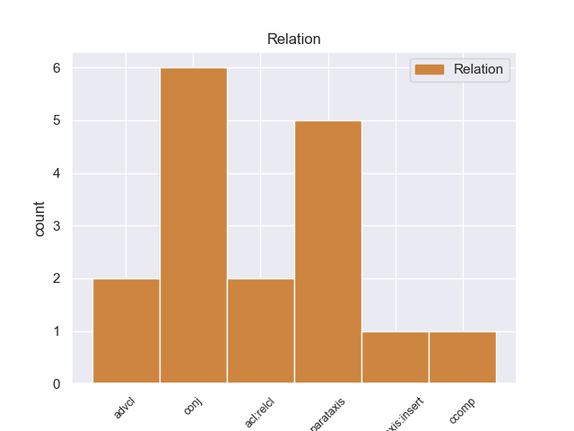
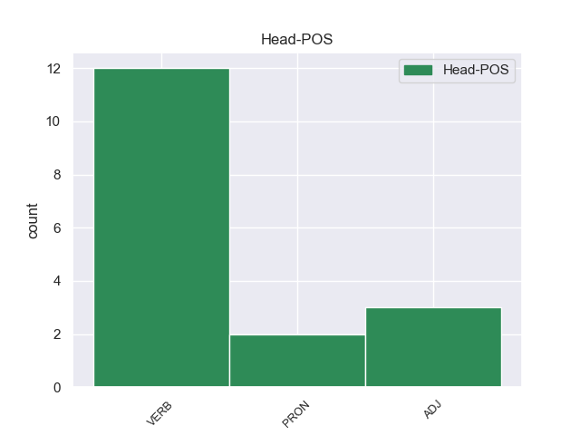
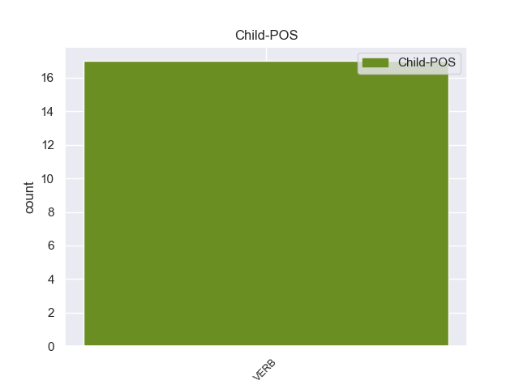

Distribution of features within this leaf



Agreement Rules sorted by frequency.
- When the dependent token is the conjunct(conj) of the head token, and the head token is VERB and the dependent token is VERB.
1 Di _ _ _ _ 0 _ _ _
2 Pietro _ _ _ _ 0 _ _ _
3 ha _ _ _ _ 0 _ _ _
4 detto dire VERB V Gender=Masc|Number=Sing|Tense=Past|VerbForm=Part 0 _ _ _
5 no _ _ _ _ 0 _ _ _
6 a _ _ _ _ 0 _ _ _
7 Mario _ _ _ _ 0 _ _ _
8 Monti _ _ _ _ 0 _ _ _
9 Presidente _ _ _ _ 0 _ _ _
10 di _ _ _ _ 0 _ _ _
11 il _ _ _ _ 0 _ _ _
12 Consiglio _ _ _ _ 0 _ _ _
13 ... _ _ _ _ 0 _ _ _
14 ma _ _ _ _ 0 _ _ _
15 ha _ _ _ _ 0 _ _ _
16 detto dire VERB V Gender=Masc|Number=Sing|Tense=Past|VerbForm=Part 4 conj _ _
17 sì _ _ _ _ 0 _ _ _
18 a _ _ _ _ 0 _ _ _
19 Mannagggiament _ _ _ _ 0 _ _ _
20 ! _ _ _ _ 0 _ _ _
21 ( _ _ _ _ 0 _ _ _
22 ... _ _ _ _ 0 _ _ _
23 ebook _ _ _ _ 0 _ _ _
24 o _ _ _ _ 0 _ _ _
25 libro _ _ _ _ 0 _ _ _
26 cartaceo _ _ _ _ 0 _ _ _
27 ! _ _ _ _ 0 _ _ _
28 ) _ _ _ _ 0 _ _ _
1 Se _ _ _ _ 0 _ _ _
2 a _ _ _ _ 0 _ _ _
3 il _ _ _ _ 0 _ _ _
4 posto _ _ _ _ 0 _ _ _
5 di _ _ _ _ 0 _ _ _
6 il _ _ _ _ 0 _ _ _
7 #Milan _ _ _ _ 0 _ _ _
8 ci _ _ _ _ 0 _ _ _
9 fosse _ _ _ _ 0 _ _ _
10 stata essere VERB V Gender=Fem|Number=Sing|Tense=Past|VerbForm=Part 21 advcl _ _
11 la _ _ _ _ 0 _ _ _
12 #Juve _ _ _ _ 0 _ _ _
13 , _ _ _ _ 0 _ _ _
14 la _ _ _ _ 0 _ _ _
15 priorità _ _ _ _ 0 _ _ _
16 di _ _ _ _ 0 _ _ _
17 il _ _ _ _ 0 _ _ _
18 governo _ _ _ _ 0 _ _ _
19 #Monti _ _ _ _ 0 _ _ _
20 sarebbe _ _ _ _ 0 _ _ _
21 diventata diventare VERB V Gender=Fem|Number=Sing|Tense=Past|VerbForm=Part 0 _ _ _
22 un' _ _ _ _ 0 _ _ _
23 interpellanza _ _ _ _ 0 _ _ _
24 parlamentare _ _ _ _ 0 _ _ _
25 anti _ _ _ _ 0 _ _ _
26 - _ _ _ _ 0 _ _ _
27 Juve _ _ _ _ 0 _ _ _
1 #Grillo _ _ _ _ 0 _ _ _
2 non _ _ _ _ 0 _ _ _
3 è _ _ _ _ 0 _ _ _
4 il _ _ _ _ 0 _ _ _
5 peggiore _ _ _ _ 0 _ _ _
6 di _ _ _ _ 0 _ _ _
7 i _ _ _ _ 0 _ _ _
8 mali _ _ _ _ 0 _ _ _
9 , _ _ _ _ 0 _ _ _
10 e _ _ _ _ 0 _ _ _
11 se _ _ _ _ 0 _ _ _
12 tra _ _ _ _ 0 _ _ _
13 mali _ _ _ _ 0 _ _ _
14 devo _ _ _ _ 0 _ _ _
15 scegliere _ _ _ _ 0 _ _ _
16 lui _ _ _ _ 0 _ _ _
17 è _ _ _ _ 0 _ _ _
18 quello _ _ _ _ 0 _ _ _
19 minore _ _ _ _ 0 _ _ _
20 , _ _ _ _ 0 _ _ _
21 o _ _ _ _ 0 _ _ _
22 quello quello PRON PD Gender=Masc|Number=Sing|PronType=Dem 0 _ _ _
23 di _ _ _ _ 0 _ _ _
24 cui _ _ _ _ 0 _ _ _
25 ancora _ _ _ _ 0 _ _ _
26 non _ _ _ _ 0 _ _ _
27 ho _ _ _ _ 0 _ _ _
28 sofferto soffrire VERB V Gender=Masc|Number=Sing|Tense=Past|VerbForm=Part 22 acl:relcl _ _
29 ... _ _ _ _ 0 _ _ _
1 RT _ _ _ _ 0 _ _ _
2 @user _ _ _ _ 0 _ _ _
3 : _ _ _ _ 0 _ _ _
4 ' _ _ _ _ 0 _ _ _
5 domande _ _ _ _ 0 _ _ _
6 idiote _ _ _ _ 0 _ _ _
7 ' _ _ _ _ 0 _ _ _
8 pt _ _ _ _ 0 _ _ _
9 . _ _ _ _ 0 _ _ _
10 7 _ _ _ _ 0 _ _ _
11 ' _ _ _ _ 0 _ _ _
12 hai _ _ _ _ 0 _ _ _
13 tagliato tagliare VERB V Gender=Masc|Number=Sing|Tense=Past|VerbForm=Part 0 _ _ _
14 i _ _ _ _ 0 _ _ _
15 capelli _ _ _ _ 0 _ _ _
16 ? _ _ _ _ 0 _ _ _
17 ' _ _ _ _ 0 _ _ _
18 NO _ _ _ _ 0 _ _ _
19 ME _ _ _ _ 0 _ _ _
20 LI _ _ _ _ 0 _ _ _
21 SONO _ _ _ _ 0 _ _ _
22 MANGIATI mangiare VERB V Gender=Masc|Number=Plur|Tense=Past|VerbForm=Part 13 parataxis _ SpaceAfter=No
23 , _ _ _ _ 0 _ _ _
24 NE _ _ _ _ 0 _ _ _
25 VUOI _ _ _ _ 0 _ _ _
26 UN _ _ _ _ 0 _ _ _
27 PO' _ _ _ _ 0 _ _ _
28 ? _ _ _ _ 0 _ _ _
1 Sono _ _ _ _ 0 _ _ _
2 fiero fiero ADJ A Gender=Masc|Number=Sing 0 _ _ _
3 di _ _ _ _ 0 _ _ _
4 sostenere _ _ _ _ 0 _ _ _
5 questo _ _ _ _ 0 _ _ _
6 Governo _ _ _ _ 0 _ _ _
7 . _ _ _ _ 0 _ _ _
8 #Monti _ _ _ _ 0 _ _ _
9 ha _ _ _ _ 0 _ _ _
10 iniziato _ _ _ _ 0 _ _ _
11 bene _ _ _ _ 0 _ _ _
12 , _ _ _ _ 0 _ _ _
13 è _ _ _ _ 0 _ _ _
14 autorevole _ _ _ _ 0 _ _ _
15 . _ _ _ _ 0 _ _ _
16 L' _ _ _ _ 0 _ _ _
17 Italia _ _ _ _ 0 _ _ _
18 in _ _ _ _ 0 _ _ _
19 #UE _ _ _ _ 0 _ _ _
20 ha _ _ _ _ 0 _ _ _
21 ripreso riprendere VERB V Gender=Masc|Number=Sing|Tense=Past|VerbForm=Part 2 parataxis _ _
22 il _ _ _ _ 0 _ _ _
23 posto _ _ _ _ 0 _ _ _
24 che _ _ _ _ 0 _ _ _
25 gli _ _ _ _ 0 _ _ _
26 spetta _ _ _ _ 0 _ _ _
27 . _ _ _ _ 0 _ _ _
1 È _ _ _ _ 0 _ _ _
2 bello bello ADJ A Gender=Masc|Number=Sing 0 _ _ _
3 cambiare _ _ _ _ 0 _ _ _
4 lavoro _ _ _ _ 0 _ _ _
5 ha _ _ _ _ 0 _ _ _
6 detto dire VERB V Gender=Masc|Number=Sing|Tense=Past|VerbForm=Part 2 parataxis:insert _ _
7 Mario _ _ _ _ 0 _ _ _
8 Monti _ _ _ _ 0 _ _ _
9 , _ _ _ _ 0 _ _ _
10 68 _ _ _ _ 0 _ _ _
11 anni _ _ _ _ 0 _ _ _
12 , _ _ _ _ 0 _ _ _
13 pornodivo _ _ _ _ 0 _ _ _
14 ! _ _ _ _ 0 _ _ _
15 @user _ _ _ _ 0 _ _ _
1 #Miocuggino _ _ _ _ 0 _ _ _
2 mi _ _ _ _ 0 _ _ _
3 ha _ _ _ _ 0 _ _ _
4 detto dire VERB V Gender=Masc|Number=Sing|Tense=Past|VerbForm=Part 0 _ _ _
5 che _ _ _ _ 0 _ _ _
6 Mario _ _ _ _ 0 _ _ _
7 Monti _ _ _ _ 0 _ _ _
8 da _ _ _ _ 0 _ _ _
9 bambino _ _ _ _ 0 _ _ _
10 una _ _ _ _ 0 _ _ _
11 volta _ _ _ _ 0 _ _ _
12 è _ _ _ _ 0 _ _ _
13 morto morire VERB V Gender=Masc|Number=Sing|Tense=Past|VerbForm=Part 4 ccomp _ SpaceAfter=No
14 . _ _ _ _ 0 _ _ _
15 #oramonti _ _ _ _ 0 _ _ _
Disagree Examples:
1 #maipiù _ _ _ _ 0 _ _ _
2 #finecorsa _ _ _ _ 0 _ _ _
3 B. _ _ _ _ 0 _ _ _
4 detta dire VERB V Gender=Fem|Number=Sing|Tense=Past|VerbForm=Part 0 _ _ _
5 ancora _ _ _ _ 0 _ _ _
6 condizioni _ _ _ _ 0 _ _ _
7 a _ _ _ _ 0 _ _ _
8 il _ _ _ _ 0 _ _ _
9 Governo _ _ _ _ 0 _ _ _
10 Monti _ _ _ _ 0 _ _ _
11 : _ _ _ _ 0 _ _ _
12 in _ _ _ _ 0 _ _ _
13 gli _ _ _ _ 0 _ _ _
14 ultimi _ _ _ _ 0 _ _ _
15 10 _ _ _ _ 0 _ _ _
16 anni _ _ _ _ 0 _ _ _
17 ha _ _ _ _ 0 _ _ _
18 portato portare VERB V Gender=Masc|Number=Sing|Tense=Past|VerbForm=Part 4 parataxis _ _
19 il _ _ _ _ 0 _ _ _
20 paese _ _ _ _ 0 _ _ _
21 a _ _ _ _ 0 _ _ _
22 lo _ _ _ _ 0 _ _ _
23 sfascio _ _ _ _ 0 _ _ _
24 e _ _ _ _ 0 _ _ _
25 parla _ _ _ _ 0 _ _ _
26 ancora _ _ _ _ 0 _ _ _
27 . _ _ _ _ 0 _ _ _
28 Schifo _ _ _ _ 0 _ _ _